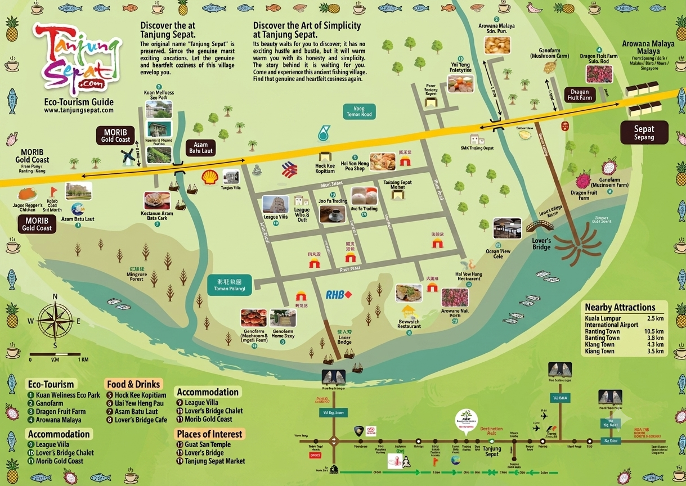

Plan Your Journey
Essential Travel Guide
Tanjung Sepat Unlocked: Your Insider Guide to Malaysia’s Best-Kept Coastal Secret.The Only Guide You Need to Experience Tanjung Sepat Like a Local.
Best Time to Visit
Temperature Info The village
High Temp (°C)
Low Temp (°C)
Rainy Days / Month
Transportation Guide
By Road 🚙 🚌 🚢
Self-Driving: Direct via Federal Route 5 from KL (approx. 1.5 hours).
Public Bus: From TBS or Klang Sentral to Banting, then local e-hailing.
Your Packing & Tips
Travel Hacks
- 🔌 Power adapters
- 👟 Packing tars
- 🧴 Mosquito cos
Phrases
- Malay 🔊
- Yisman 🔊
- Hellov, 🔊
Money Tips
- 🛍️ Market haggling
- 👣 Free views
Getting Around the Village
Village Maps
Bike Path
Walkable spots
Docks & route
